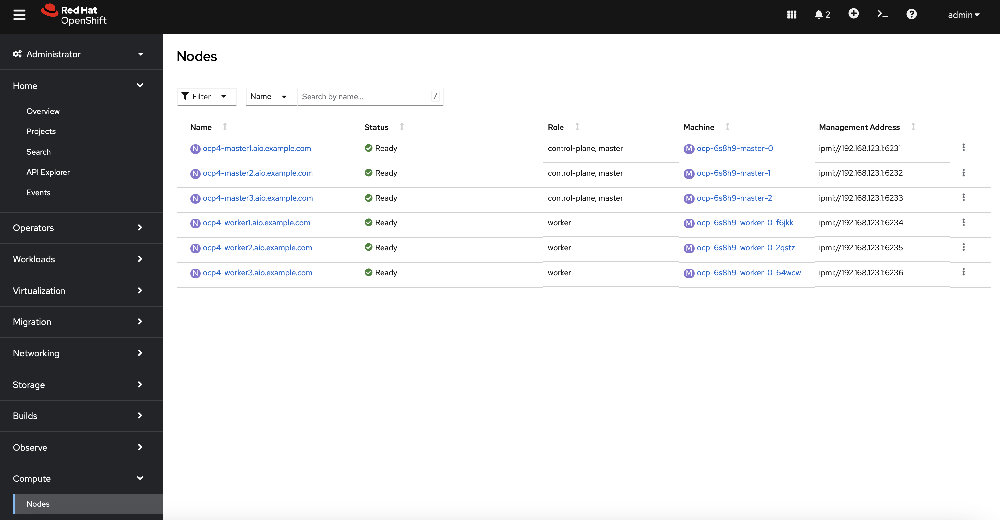
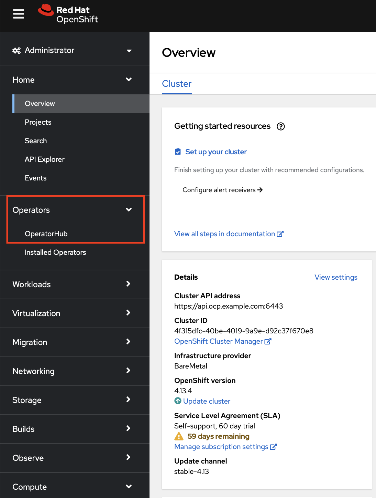
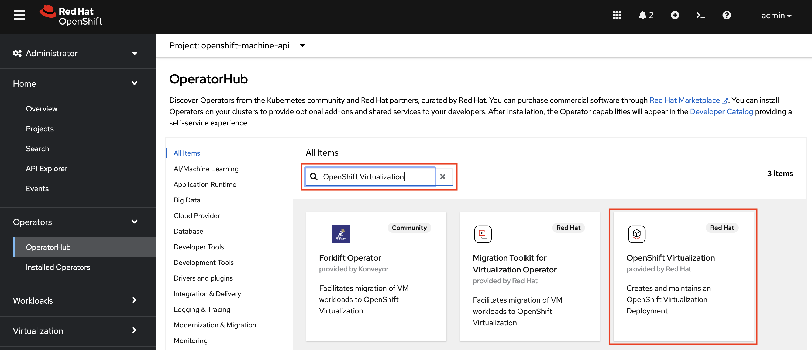
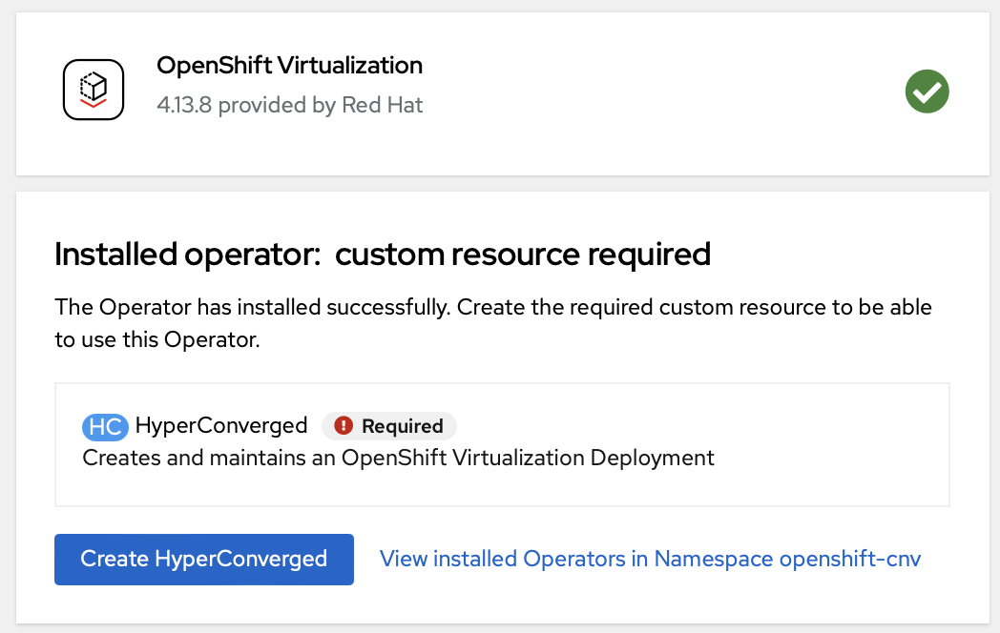
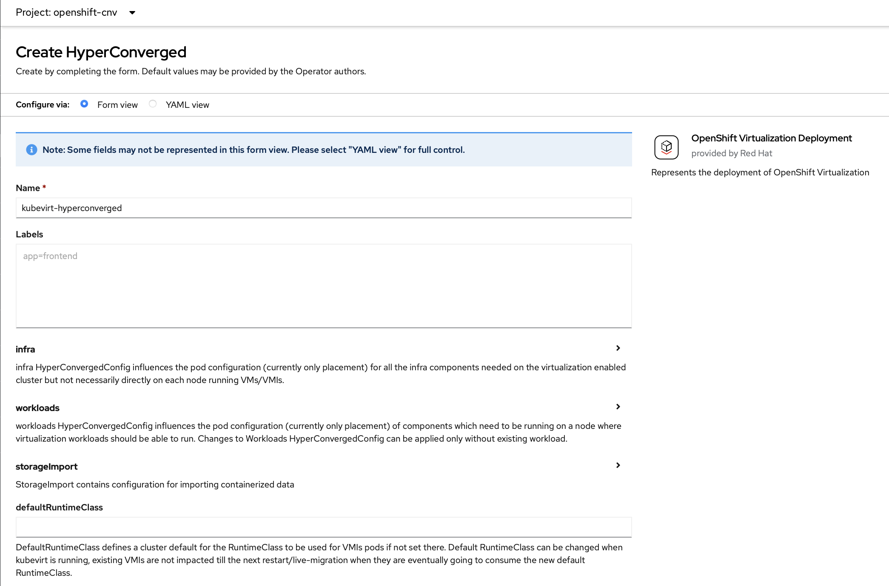
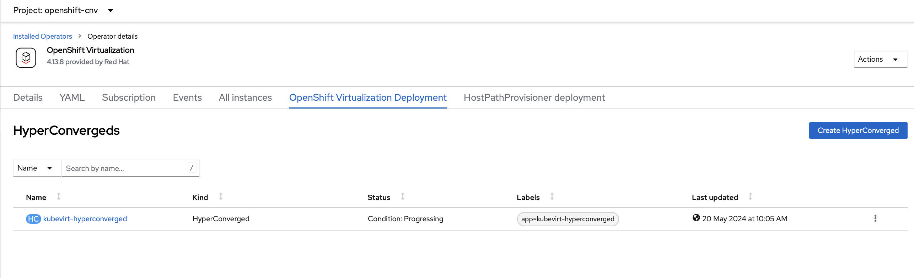
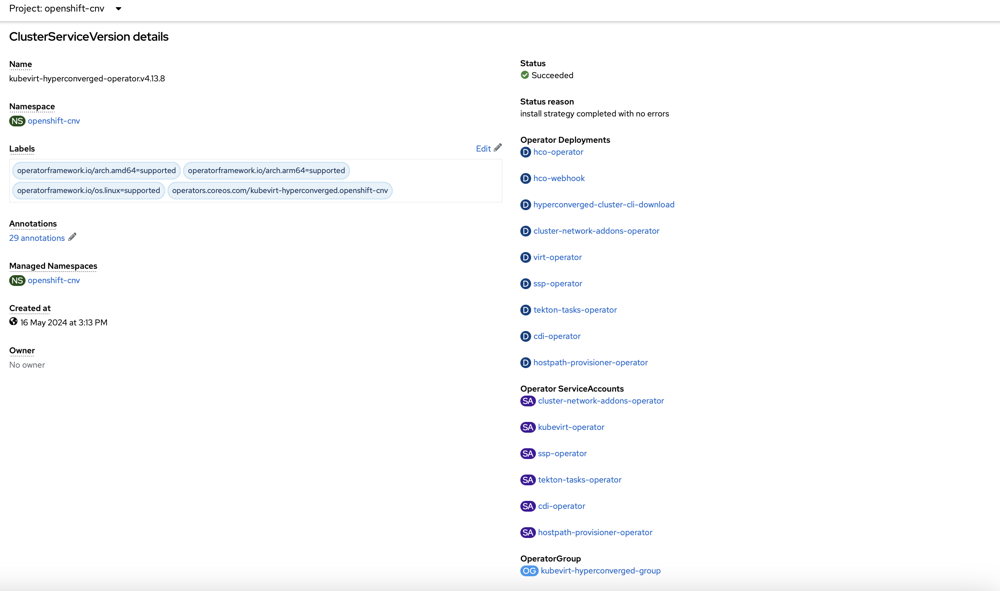
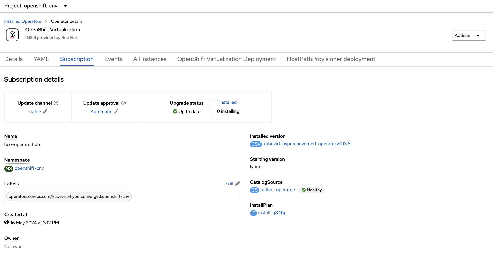
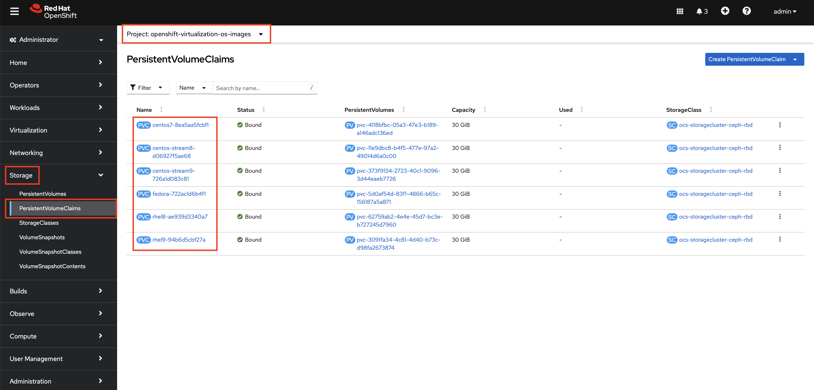

Install OpenShift Virtualization Operator
Review Red Hat OpenShift Container Platform Cluster
Verify Requirements
Before you install OpenShift Virtualization for Red Hat OpenShift Container Platform 4, make sure that your Red Hat OpenShift Container Platform cluster meets the following requirements:
-
Your cluster must be installed on bare-metal infrastructure with Red Hat Enterprise Linux® CoreOS (RHCOS) workers.
OpenShift Virtualization supports only RHCOS worker nodes—Red Hat Enterprise Linux (RHEL 7 and RHEL 8) nodes are not supported.
-
Additionally, your cluster must use the installer-provisioned infrastructure and deploy machine health checks to maintain high availability (HA) of virtual machines.
-
You must manage your compute nodes according to the number and size of the virtual machines that you want to host in the cluster.
Review Nodes and Machines
-
Log in to the OpenShift Container Platform web console using the administrator credentials provided in the previous lab, if you are not already logged in.
-
From the navigation menu, select Compute → Nodes:
There are three master and three workers in the OpenShift 4 Cluster. In addition, the
ipmi(Intelligent Platform Management Interface) is being used to manage the bare-metal nodes. -
Click a worker node to obtain resource information about the node, and navigate to the Details tab to review the information about the operating system:
The bare-metal node is configured using RHCOS.
-
Select Compute → Bare Metal Hosts:
Ignore the "Registration error" message if it appears. -
Click a worker node to obtain information about the physical (bare-metal) node:
Ignore the "Registration error" message if it appears.
Install Operator
In this section, you learn to install an Operator from the OperatorHub page. You manage Operators from the Administrator perspective in the web console.
| In the demo lab, OpenShift Virtualization Operator is already installed. If you are performing this on your own setup then you can follow the below instructions to install the Operator. |
-
From the navigation menu, select Operators → OperatorHub:
 -
Explore the OperatorHub page and note that all of the currently available Operators are displayed:
The dashboard lists the Operators that can be installed and various ways to filter the list.
-
In the Filter by keyword… field, type
OpenShift Virtualizationand select the OpenShift Virtualization tile:You can also filter by category, installation state, provider, provider type, capability level, or infrastructure features.
-
Click Install:
-
On the Install Operator wizard page that opens with the default options selected, click Install:
The wizard allows you to specify the update channel, the installation mode, the installed Namespace, and the update approval strategy options.
As the installation progresses, the status is shown.
-
When the installation is complete, click Create HyperConverged to create the required custom resource:
 -
Review the Create HyperConverged wizard options:
 -
Without changing the default values, scroll down and click Create to open the OpenShift Virtualization Deployment tab for the OpenShift Virtualization Operator:
 -
Watch the Status column until the status changes to
Available:
Examine OpenShift Virtualization Operator
-
Click the Details tab to view information about the Operator:
-
Scroll down to the ClusterServiceVersion details section and review the details:
You can see the Namespace where the Operator was installed, the status, the different Operator deployments created during the installation, the Operator ServiceAccounts created, and the OperatorGroup.
-
Scroll up and click the Subscription tab to view the subscription details:
Subscribing an Operator to one or more namespaces makes the Operator available to developers on your cluster.
Examine PersistentVolumeClaims Created by Operator
During the installation of the Operator, some PersistentVolumeClaims for different distributions are created:
-
Red Hat Enterprise Linux 8.0+
-
Red Hat Enterprise Linux 9.0
-
Fedora 34+
-
CentOS Stream 8
-
CentOS Stream 9
In this section, you examine the PVCs created by the Operator.
-
In the left menu, navigate to Storage and click PersistentVolumeClaims:
 -
Explore the PersistentVolumeClaims page and the information provided about the PVCs.